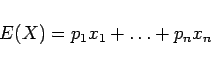
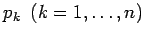
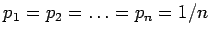
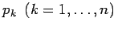
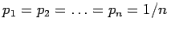
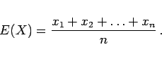
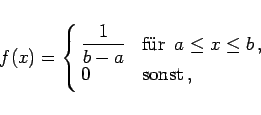
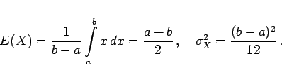

Inhalt Index DeskTop Bronstein

 Wahrscheinlichkeitsrechnung und Mathematische Statistik Wahrscheinlichkeitsrechnung Zufallsgrößen, Verteilungsfunktionen Erwartungswert und Streuung, Tschebyscheffsche Ungleichung
Wahrscheinlichkeitsrechnung und Mathematische Statistik Wahrscheinlichkeitsrechnung Zufallsgrößen, Verteilungsfunktionen Erwartungswert und Streuung, Tschebyscheffsche Ungleichung


Im diskreten Fall ergibt sich als Erwartungswert gemäß (16.50a) der Zufallsgröße X das gewogene Mittel
|  | (16.54) |
der Werte  mit den Wahrscheinlichkeiten , Gewichte genannt. Bei Gleichverteilung ist , und E(X) wird zum arithmetischen Mittel der Werte xk:
mit den Wahrscheinlichkeiten , Gewichte genannt. Bei Gleichverteilung ist , und E(X) wird zum arithmetischen Mittel der Werte xk:
|  | (16.55) |
Im kontinuierlichen Fall erhält man bei Gleichverteilung der Zufallsgröße X über dem endlichen Intervall [a,b] die Dichtefunktion
|  | (16.56) |
und daraus folgt:
|  | (16.57) |